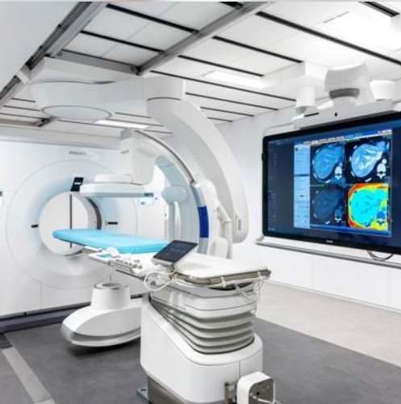

Tecnologia e Medicina
Duas áreas diferentes que podem se conectar e contribuir para o futuro da saúde.
A tecnologia na área da saúde
A tecnologia está cada vez mais presente na Medicina. Ela contribui para a realização de exames, diagnósticos, cirurgias e no acompanhamento dos pacientes.
Recursos tecnológicos também ajudam os profissionais da saúde a organizar informações, acessar históricos médicos e tornar alguns procedimentos mais rápidos e eficientes.
Isso mostra como a tecnologia pode ser uma grande aliada no cuidado com a vida.

O que aprendi com a tecnologia?
Durante o curso técnico, desenvolvi conhecimentos que considero importantes para qualquer profissão.
Programação
Desenvolvi o raciocínio lógico e a capacidade de buscar soluções para problemas.
Banco de dados
Aprendi a importância de organizar e armazenar informações corretamente.
Trabalho em equipe
Aprendi a colaborar com outras pessoas e desenvolver projetos em conjunto.
Como isso pode contribuir para meu futuro?
Mesmo que meu objetivo seja seguir a Medicina, acredito que os conhecimentos adquiridos no curso técnico Desenvolvimento de Sistemas serão importantes.
A organização de informações, o raciocínio lógico e a familiaridade com ferramentas digitais podem contribuir para minha atuação na área da saúde.
Quero levar comigo tudo o que aprendi e continuar aprendendo, pois acredito que conhecimento nunca é demais.